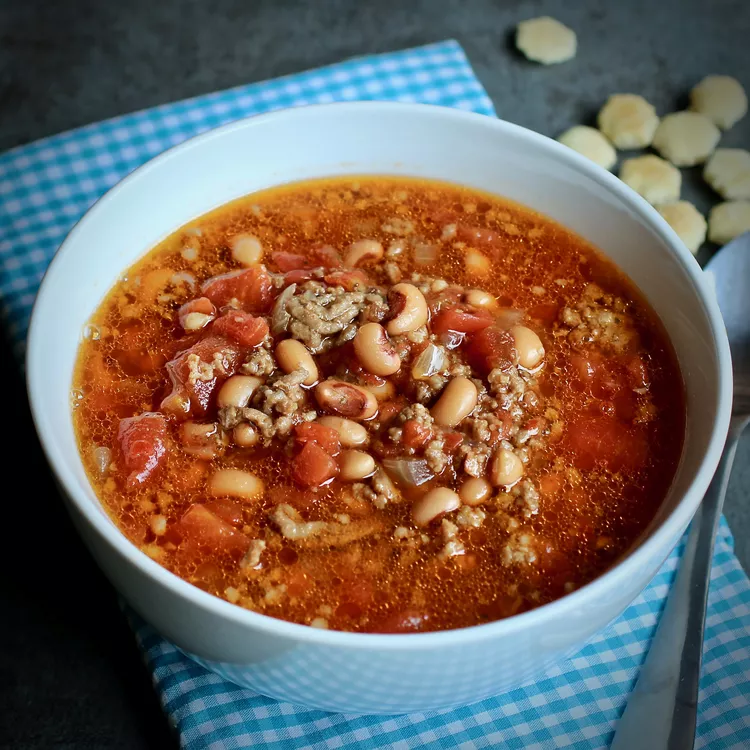

Black-eyed Peas Soup

Description
This black-eyed pea soup is a great New Year's meal and perfect on a cold
winter night. Serve this comfort food with corn bread.
Ingredients
- 1 pound dried black-eyed peas
- 1/4 pound salt pork, diced
- 1 large onion, chopped
- 1 large clove garlic, minced
- 1 bay leaf
Steps
- Wash peas and soak overnight in cold water.
- Drain peas and place in a large pot with 2 quarts of water.
- Add salt pork, onion, garlic, and bay leaf.
- Cover and simmer 2 hours, or until peas are tender.
- Remove bay leaf.
- Season to taste with salt and pepper.
Back to home